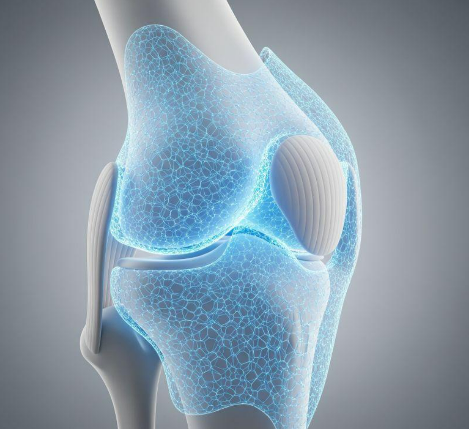
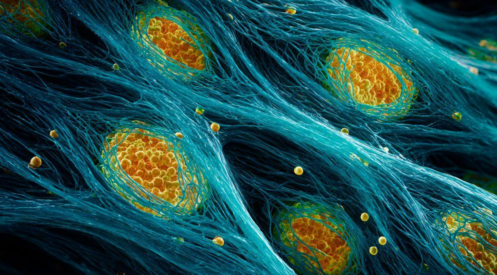
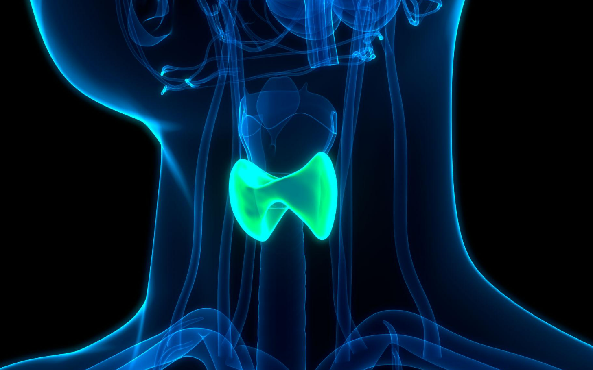

Osteoarthritis
Research into cartilage degeneration, inflammation, and potential regenerative interventions.
Explore the diseases and medical conditions being investigated in regenerative medicine, and discover how advances in stem cell research are shaping new possibilities for healthcare.
Exploring the potential of regenerative medicine to support research into musculoskeletal health, tissue repair, and joint function.
Musculoskeletal disorders affect the bones, joints, muscles, cartilage, ligaments, and tendons. These conditions may cause persistent pain, inflammation, stiffness, and reduced mobility.
Researchers are investigating stem cells, platelet-rich plasma (PRP), and other regenerative approaches to understand their potential role in tissue repair and musculoskeletal recovery.
Regenerative therapies remain an active area of research. Their effectiveness and regulatory status vary by condition and treatment.

Research into cartilage degeneration, inflammation, and potential regenerative interventions.
Investigating cellular and tissue-engineering strategies for damaged cartilage.
Exploring biological approaches that may influence tissue healing and recovery.
Studying stem cells and biomaterials in bone regeneration and tissue-engineering research.
Exploring the potential of stem cell science to advance research into the brain, spinal cord, and nervous system.
Neurological disorders affect the central and peripheral nervous systems, potentially impacting movement, coordination, sensation, cognition, and everyday functioning.
Researchers are investigating stem cells, neural progenitor cells, and cell-derived biological factors to better understand nerve damage, neuroinflammation, and possible mechanisms of neural repair.
Stem cell-based interventions for many neurological conditions remain experimental and require rigorous clinical evaluation.
Discover neurological conditions being studied in regenerative medicine research.
Investigating stem cell-derived dopamine-producing neurons as a potential approach to replacing cells affected by Parkinson's disease.
Exploring cell-based strategies intended to support nerve repair, reduce secondary injury, and improve understanding of recovery after spinal cord damage.
Studying immune-system reconstitution and cellular approaches in selected forms of multiple sclerosis.
Investigating how cellular therapies and regenerative mechanisms may influence brain repair and neurological rehabilitation after stroke.
Exploring how regenerative medicine and cellular research may contribute to a deeper understanding of lung injury, inflammation, and tissue repair.
Chronic lung diseases affect the airways and lung tissues, often leading to breathing difficulties, reduced oxygen exchange, persistent coughing, and decreased respiratory function.
Researchers are investigating mesenchymal stromal cells, cellular signaling, and other regenerative approaches to better understand inflammation and potential repair mechanisms in damaged lung tissue.
Stem cell-based interventions for chronic lung diseases remain investigational and are not established cures or replacements for standard respiratory care.
Research into regenerative medicine is exploring several chronic respiratory conditions and their underlying biological mechanisms.
Investigating cellular approaches to understand chronic inflammation, airway damage, and potential mechanisms of lung tissue repair.
Studying regenerative pathways and cell-based strategies related to abnormal lung scarring and progressive loss of lung function.
Exploring the effects of cellular therapies on severe lung inflammation and injury in experimental and clinical research settings.
Investigating stem cell-related approaches to lung development, inflammation, and tissue injury in premature infants.
Understanding how advances in stem cell science and regenerative medicine may contribute to research into liver function, tissue repair, and digestive health.
Chronic liver and gastrointestinal diseases can involve persistent inflammation, tissue damage, fibrosis, and changes in normal organ function. These conditions may significantly affect long-term health and quality of life.
Researchers are investigating cell-based therapies, organoids, and tissue-engineering approaches to better understand liver regeneration, intestinal repair, and inflammatory processes.
Stem cell-based treatments for most chronic liver and gastrointestinal diseases remain experimental. Established medical treatments continue to be essential.
Regenerative medicine research is exploring potential applications involving chronic liver damage and gastrointestinal disorders.
Investigating cellular approaches and regenerative mechanisms in advanced liver scarring and impaired liver function.
Exploring how cellular signaling and experimental regenerative strategies may influence fibrotic tissue changes.
Studying cellular therapies and intestinal tissue repair in conditions such as Crohn's disease and ulcerative colitis.
Investigating intestinal organoids, stem cell biology, and tissue-engineering approaches for understanding gut repair.
Exploring the future of diabetes research through stem cell science, pancreatic beta-cell development, and regenerative medicine.
Diabetes is a chronic metabolic condition characterized by elevated blood glucose levels resulting from insufficient insulin production, reduced insulin sensitivity, or a combination of both.
Stem cell research is investigating ways to produce functional insulin-secreting pancreatic islet cells, while other regenerative approaches are being studied for their potential role in understanding diabetes-related tissue damage.
Stem cell-derived islet therapies are being evaluated in clinical research, particularly for selected patients with type 1 diabetes. They are not established treatments for all forms of diabetes or its complications.
Advances in cellular science are opening new research pathways for diabetes and its long-term complications.
Investigating stem cell-derived insulin-producing islet cells as a potential approach to restoring insulin secretion in selected patients.
Exploring pancreatic beta-cell biology, insulin resistance, and cellular mechanisms involved in metabolic dysfunction.
Studying nerve damage caused by prolonged high blood glucose and investigating experimental regenerative strategies for neural tissue repair.
Researching cell-based and tissue-engineering approaches for difficult-to-heal wounds, impaired circulation, and diabetes-related tissue injury.
Exploring the science of skin renewal, tissue regeneration, and cellular health through advances in regenerative medicine.

Skin aging and tissue damage involve changes in collagen production, cellular activity, and the body's natural repair processes.
Regenerative dermatology research investigates platelet-rich plasma, tissue engineering, and cell-derived biological factors to understand wound healing and skin regeneration.
Investigating collagen biology, cellular senescence, and mechanisms associated with changes in skin structure and elasticity.
Exploring regenerative strategies for wound healing, scar formation, and restoration of damaged skin.
Studying hair follicle stem cells, growth signaling, and experimental approaches to hair regeneration.
Understanding cellular aging, tissue maintenance, and the biological processes that influence long-term tissue health.
Understanding endocrine health through advances in cellular science, hormone signaling, and regenerative medicine research.
Hormones regulate essential functions throughout the body, including metabolism, growth, reproduction, stress responses, and energy balance. Hormonal imbalances may occur when endocrine glands produce too much or too little of a particular hormone.
Scientists are studying endocrine stem cells, organoids, and tissue-engineering approaches to better understand how hormone-producing tissues develop, function, and respond to injury.
Stem cell treatments are not established therapies for most hormonal imbalances. Diagnosis and management generally rely on established endocrinology care.

Cellular research is helping scientists understand endocrine function, gland development, and potential future regenerative applications.
Investigating thyroid organoids, hormone-producing cells, and tissue development to better understand thyroid dysfunction.
Exploring stem cell-derived pituitary tissue models to study hormone deficiencies, gland development, and disease.
Studying adrenal cell biology and experimental tissue models to better understand hormone production and adrenal disorders.
Investigating ovarian tissue biology, follicle development, and regenerative research related to reproductive endocrine function.